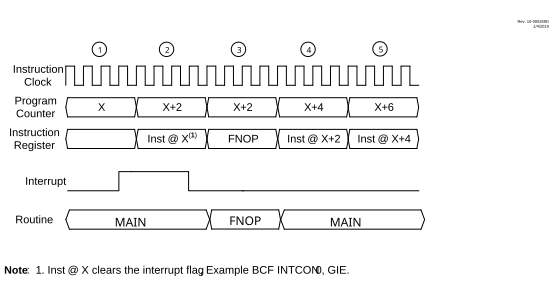

If the last instruction before the interrupt controller vectors to the ISR
from the main routine clears the GIE, PIE, or PIR bit associated with the interrupt, the
controller executes one forced NOP instruction cycle before it returns
to the main routine.
Figure 11-10 illustrates the sequence of events when a peripheral interrupt is asserted and then cleared on the last executed instruction cycle.
If the GIE, PIE or PIR bit associated with the interrupt is cleared prior to vectoring to the ISR, then the controller continues executing the main routine.
